컨텐츠영역
토목사업
-
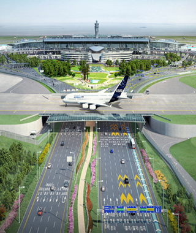 인천공항3단계 공동구 및 유도선(R17)교량 구조물공사(3-5공구) 위치: 인천국제공항 3단계사업 부지 일원
공사기간: 2014-01 ~ 2016-12
-
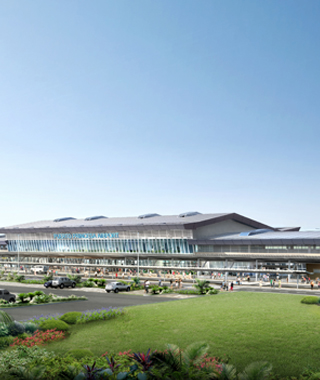 푸에르토 프린세사 공항 위치: 필리핀 서남부 팔라완 섬
공사기간: 2014-08 ~ 2017-01
규모: 활주로 2,600m, 유도로 1,051m, 계류장 34,082㎡
-
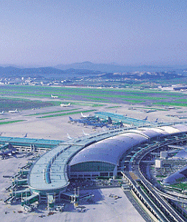 인천국제공항 제2활주로지역 남측토목시설공사(A-4) 위치: 인천광역시 중구 운서동
공사기간: 1996-12 ~ 2000-11
규모: 본선활주로:60mX928.5m
-
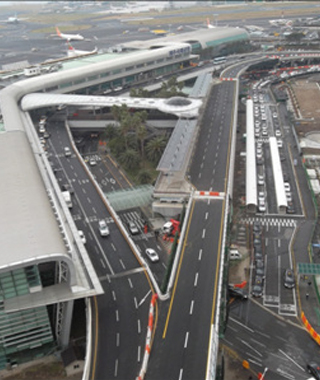 제주공항고가도로 위치: 제주국제공항 내
공사기간: 2009. 05. 25 ~ 2012. 12. 30
규모: 고가도로 총연장 : L = 624m
-
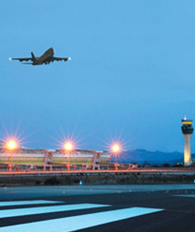 무안공항 위치: 전남 무안군 망운면 피서리 일원
공사기간: 1999.12 ~ 2008.12
규모: 활주로 및 유도로 1본(연장 : 2.8Km), 여객터미널 외 부대건물 8동
연면적: 77만평
-
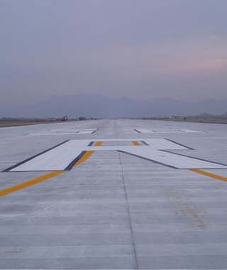 김해공항 활주로 포장공사 위치: 부산시 강서구 대저2동 김해공항내 일원
공사기간: 2007.11.22 ~ 2010.02.08
규모: 김해활주로 재포장
-
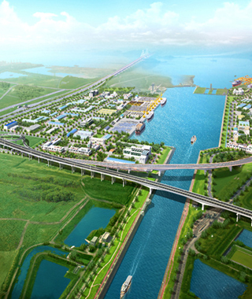 제2외곽순환고속도로(인천~김포) 위치: 인천광역시 서구 경서동 일원
공사기간: 2012-03 ~ 2017-03
규모: 연장 : L=2.92km(6차로) / 토공 : 437,011m3(쌓기)
-
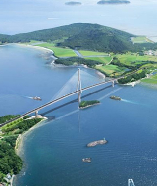 안좌자라간연도교 위치: 전남 신안군 안좌면 자라리 ~ 복호리 일원
공사기간: 2011-12 ~ 2018-04
규모: 총 연장 L=2,003m (왕복 2차로)
-
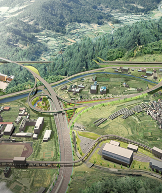 고속국도 제700호선 대구외곽순환 공사(제4공구) 위치: 대구광역시 북구 읍내동 ~ 동호동
공사기간: 2014-03 ~ 2020-12
규모: 연장 : 3.58km, 폭 20.0m, 분기점 1개소
-
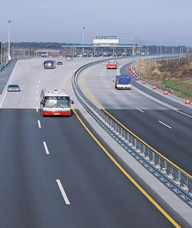 천안 논산간 고속도로 건설공사 6공구 위치: 천안-논산
공사기간: 1997.12 ~ 2002.12
규모: L = 18.4Km
-
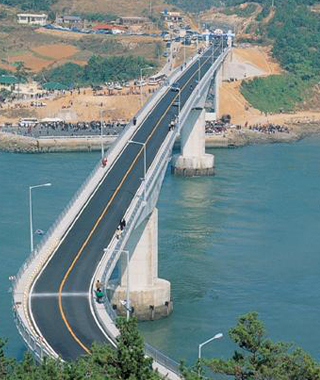 나로도 연륙교 가설공사 위치: 전라남도 고흥군
공사기간: 1990.07 ~ 1995.10
규모: L = 450m
-
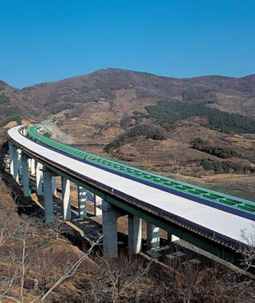 대구 부산간 고속도로 2공구 위치: -
공사기간: 2000.12 ~ 2006.02
규모: L = 5.64Km (4차선, 폭 23.4m)
-
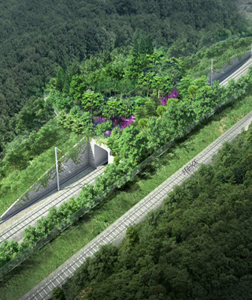 도담영천10공구 위치: 경북 의성군 금성면 학미리 ~ 군위군 의흥면 연계리
공사기간: 2015-11 ~ 2019-11
규모: 토공 : 6.178km / 터널 : 6.342km (3개소 : 청로터널, 순호터널, 수북터널) / 교량 : 1.315km (산운교 외 9개소)
-
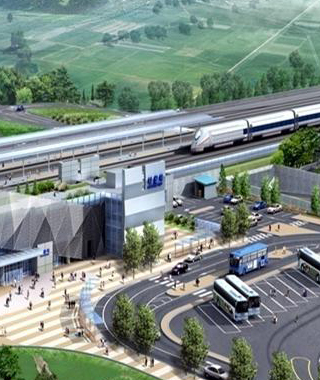 울산포항복선전철6공구 위치: 경상북도 경주시 광명동, 충효동, 현곡면 일원
공사기간: 2009년 04월 27일 ~ 2014년 04월 25일
-
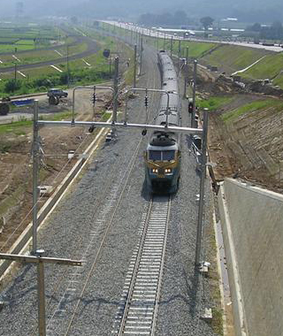 경부선 황간-추풍령간 일부 선형개량 노반공사 위치: 충북 영동군 황간면, 추풍령면 일원
공사기간: 2003년 12월 24일 ~ 2006년 12월 27일
규모: 총연장 : L = 4.3km, B = 12.0m
-
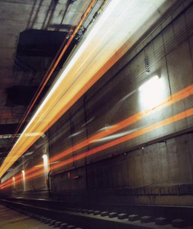 부산지하철 3호선 310공구 토목공사 위치: 부산광역시 북구 덕천동 일원
공사기간: 1997.12.31 ~ 2005.11.30
규모: 지하3층 철근콘크리트조( L=841m)
-
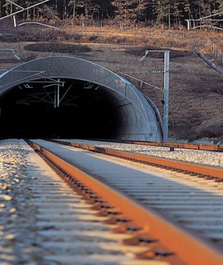 경부고속철도 제1-2공구 노반시설공사 위치: 경기도 광명시 일직동 ~ 경기도 군포시 둔대동
공사기간: 1994년 12월 31일 ~ 2002년 12월 31일
규모: 연장 10.101Km
-
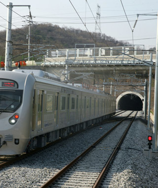 성남~여주 복선전철 제9공구 노반건설공사 위치: 경기도 여주군 능서면 용은리 ~ 여주읍 교리 일대
공사기간: 2009년 04월 27일 ~ 2014년 04월 25일
규모: 연장 1.49 KM (Ramp - A기준)
-
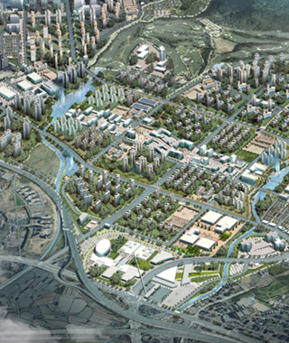 위례신도시 택지개발사업 조성공사(1공구) 위치: 서울 송파구 거여․장지동, 성남시 수정구 창곡동, 하남시 학암동 일원
공사기간: 2011-01 ~ 2016-12
규모: 사업부지 면적 2,065,731㎡
-
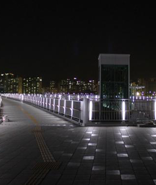 파주운정지구 보행데크 및 환승주차장 건설공사 위치: 경기도 파주시 교하읍 와동리 일원
공사기간: 2009.02.27 ~ 2011.05.31
규모: 보행데크
-
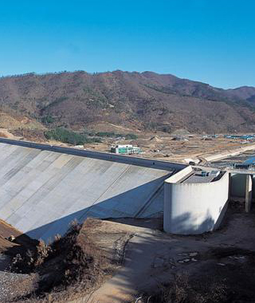 탐진댐 다목적댐 건설 위치: 전라남도 장흥군 부산면 지천리 일원
공사기간: 1997.11.25 ~ 2006.04.30
규모: 다목적댐, 수력에너지 생산
-
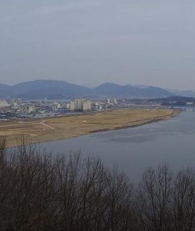 낙동강살리기19공구 위치: 경상남도 창녕군 남지읍 서남리 일원 ~ 창녕군 남지읍 학계리 일원
공사기간: 2009.11.21 ~ 2012.06.30
-
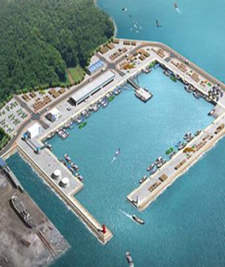 장항항 물양장 축조공사 위치: 충남 서천군 장항읍 장암리 일원
공사기간: 2010-11 ~ 2016-12
규모: 접안시설 : 820m/ 진입도로 116m/ 함선 및 도교 : 1기/ 등대 : 2기
-
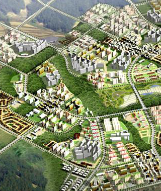 파주운정 1단계 택지개발조성공사 2공구 위치: 기도 파주시 교하읍 일원
공사기간: 2006.02.10 ~ 2012.08.31
규모: 토 공 (성토/절토) 7,604천 / 1,934천㎡